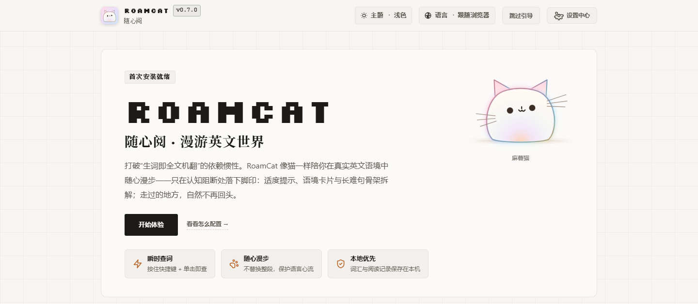
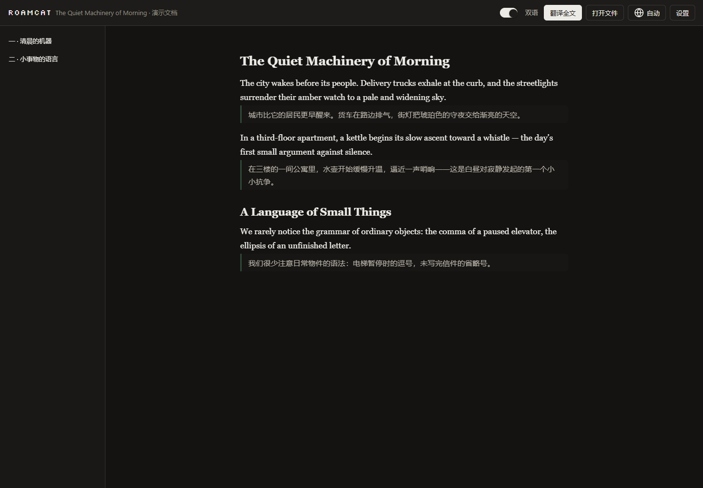
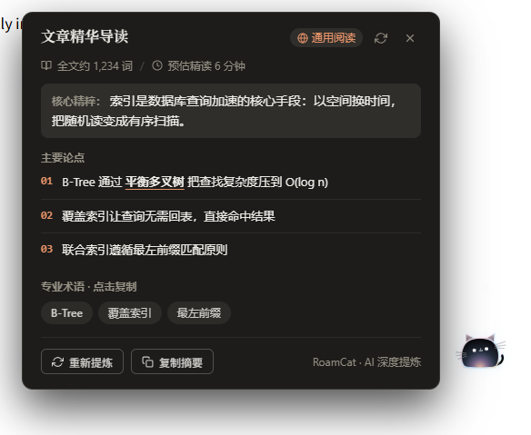
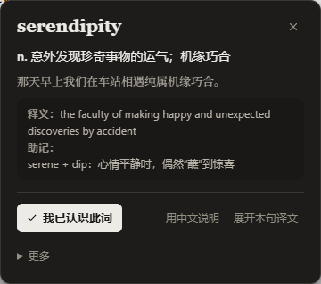

Read the English web
like a cat roams it
A dual-mode reading extension for Chrome & Edge — bilingual translation when you want it, sparse hints when you don't. Free, open-source (MPL-2.0), local-first.
0.7.2 — download the package from Releases and load it in developer mode; Chrome Web Store / Edge Add-ons listing in progress.
What is RoamCat?
RoamCat (随心阅, “read as you like”) is a free, open-source browser extension for Chrome and Edge that helps Chinese-speaking readers read English websites. It runs two modes on one engine: Bilingual Translation places a Chinese line beside each English paragraph as you reach it, while Reading Assistance keeps the page in English and adds sparse hints that fade as you improve. It also covers PDF and EPUB files, YouTube captions and Twitch chat. AI comes from a source you choose — 33 bring-your-own API providers, a local Ollama model, or your existing ChatGPT, Grok or Google subscription — and there are no RoamCat servers and no telemetry.
- Type
- Browser extension (Manifest V3) for reading English web pages, documents, video captions and live chat with Chinese help
- Browsers
- Chrome and Microsoft Edge 125+ on desktop; Firefox and Safari are not supported
- Price & license
- Free; open source under MPL-2.0
- Latest version
- 0.7.2 — released
- How to get it
- Zip from GitHub Releases or build from source, loaded in Developer mode; Chrome Web Store and Edge Add-ons listings are in progress
- Model sources
- 33 bring-your-own API providers (8 protocols), local Ollama, or your ChatGPT / Grok / Google subscription through a local connector
- Privacy
- No RoamCat servers, no telemetry; reading history off by default; API keys stay in
chrome.storage.local - Interface
- Chinese and English
- Source code
- github.com/dapao-777/roamcat
- Origin
- A rebuild of the open-source RelyLess
Two modes, one engine
Pick per page — or per mood. Both share the same translation and analysis engine.
🌐 Bilingual Translation · primary
Translates English in place into Chinese-English pairs, following your reading position — never pre-translating the whole article in the background. Navigation, tables and cards matched in place; "Back to English" removes only what the extension injected.
📖 Reading Assistance · secondary
Keeps the original English. Sparse hints on hard words that taper off as you read; hold D + click for a word card; select any phrase or passage for on-demand rescue; long sentences get structural deconstruction underlines.
🐱 Companion cat
A draggable Shadow-DOM widget perched at the page edge — reading switch, article digest, settings and shortcuts. One per page, never injected unless enabled.
📚 Built-in reader
Opens PDF and EPUB files — or any pasted article — with the same bilingual engine. "Translate all" renders paragraph by paragraph at your reading position.
🎬 Video captions & live chat
Bilingual YouTube captions for videos with caption tracks, optional cloud dictation for videos without captions (through the Google subscription connector), and opt-in Twitch live-chat translation — off by default.
On real pages
Site profiles for GitHub, Reddit, Hacker News, Stack Exchange, Discourse, dev.to and Lobsters keep code blocks, diffs and vote chrome out of reading blocks.




Model services — your choice of source
AI capability comes from a source you pick, not a vendor you're locked into.
Bring-your-own API
33 providers across 8 protocols — OpenAI, DeepSeek, Gemini, Anthropic, xAI, OpenRouter, Ollama, Alibaba Cloud, Volcano Engine, Kimi, StepFun and more. Structured-output capability is probed first, then gracefully degraded.
Subscription connector
A local Native Messaging host reuses your official CLI entitlements — Codex CLI (ChatGPT), Grok CLI (SuperGrok / X Premium+), Antigravity agy (Google AI Pro / Ultra). No API key needed.
Local model
Bundled Xenova/all-MiniLM-L6-v2 runs page-domain classification in an offscreen document — fully offline, nothing to download.
All 33 providers
OpenAI, Anthropic, Gemini, DeepSeek, Grok (xAI), OpenRouter, Requesty, OpenCode, Command Code, MiniMax, SiliconFlow, Azure OpenAI, Amazon Bedrock, Groq, DeepInfra, Mistral AI, Together.ai, Cohere, Fireworks AI, Cerebras, Ollama, Volcengine (Doubao), Alibaba Cloud Model Studio, Moonshot AI (Kimi), StepFun, SenseNova, Zhipu GLM, Xiaomi MiMo, Tencent Hunyuan TokenHub, Baidu Qianfan and Hugging Face, plus custom Chat Completions and custom Responses endpoints. Together they speak 8 API protocols. To run a model on your own machine, choose Ollama — no API key needed.
Local-first boundaries
- No servers operated, no telemetry; reading history is off by default and opt-in per site; nothing collected on incognito pages.
- API keys live only in
chrome.storage.local— never in content scripts, diagnostics or the connector. - Content scripts can only send 38 whitelisted message types out of 81; all model output passes structured validation before reaching the UI.
- Custom API endpoints must be HTTPS (loopback excepted); no remote code execution.
How RoamCat compares
An honest look next to tools you may already know.
| Aspect | RoamCat | Immersive Translate | Relingo | 彩云小译 |
|---|---|---|---|---|
| Approach | Bilingual pairs or sparse assistance keeping English primary | Full-page bilingual translation | Graded word highlights | Page & selection translation |
| Open source | ✅ MPL-2.0 | ❌ closed | ❌ closed | ❌ closed |
| Model source | 33 BYOK providers, local model, or existing AI subscriptions | Built-in + BYOK for select AI models | Built-in | Built-in |
| Cost | Free | Freemium | Freemium | Freemium |
| Platforms | Chrome / Edge 125+ | Chrome, Edge, Firefox, Safari, mobile | Chrome, Edge | Chrome, Edge, apps |
Immersive Translate is the more mature set-and-forget translator on more platforms. Choose RoamCat if you want the English original to stay in charge, auditable open-source code, or to spend your existing AI subscriptions instead of buying another one. Open-source neighbors: kiss-translator, openai-translator. RoamCat is a rebuild of RelyLess. Comparison last reviewed — competitor features change, so check their sites.
FAQ
What is RoamCat?
RoamCat (随心阅) is a free, open-source browser extension for Chrome and Edge that helps Chinese-speaking readers read English websites. It has two modes on one engine: Bilingual Translation adds a Chinese line beside each English paragraph as you reach it, and Reading Assistance keeps the page in English and adds sparse hints that fade as you improve. It is local-first, with no RoamCat servers and no telemetry.
Is RoamCat free?
Yes — MPL-2.0 open source, no accounts, no paid tier, no telemetry. You only pay if you choose to connect a paid API yourself; the bundled local model and the subscription connector cost nothing extra.
Is there an open-source alternative to Immersive Translate?
RoamCat is one: its source is MPL-2.0, you bring your own model (33 API providers, local Ollama, or an existing ChatGPT / Grok / Google subscription), there is no telemetry, and a second mode keeps the English original primary. Immersive Translate is the more mature set-and-forget full-page translator on more platforms; other open-source options include kiss-translator and openai-translator.
Does RoamCat send my reading data anywhere?
There are no RoamCat servers. Reading history is off by default and opt-in per site; page text leaves the device only when you invoke a model feature, and goes directly to the provider you configured.
Which browsers are supported?
Chrome and Edge 125+ on desktop (Manifest V3). Firefox and Safari are not currently supported.
Is RoamCat on the Chrome Web Store?
Not yet. Download the extension zip from GitHub Releases, unzip it, open chrome://extensions (or edge://extensions), turn on Developer mode and load the unpacked extension folder. Chrome Web Store and Edge Add-ons listings are in progress.
Can it translate an entire page?
Yes — Bilingual mode inserts Chinese next to each English paragraph at your reading position, and a one-click toggle switches between bilingual and translation-only. Reading Assistance mode instead keeps the page fully English and only adds sparse hints that fade as you read.
Does it work with PDFs and EPUBs?
Yes — the built-in reader opens local PDF/EPUB files and pasted articles with the same bilingual engine.
Can RoamCat translate YouTube captions or Twitch chat?
Yes. YouTube videos that have caption tracks can show the original line with a Chinese translation; for videos without captions you can start manual cloud dictation, which needs the separately installed Google subscription connector. Twitch live-chat translation is off by default and translates only new public chat messages after you turn it on.
Which AI models can I use?
33 bring-your-own providers across 8 API protocols — OpenAI, Anthropic, Gemini, DeepSeek, Grok, OpenRouter, Groq, Mistral, Ollama, Azure OpenAI, Amazon Bedrock, Alibaba Cloud, Volcengine, Kimi, StepFun and more, including custom OpenAI-compatible endpoints — plus a bundled local model for on-device page-topic classification, or a local connector that reuses your signed-in ChatGPT / Grok / Antigravity CLI subscriptions with no API key.
Can I use my ChatGPT, Grok or Google subscription instead of an API key?
Yes, through an optional local connector. It reuses the official CLIs you are already signed in to — Codex CLI (ChatGPT), Grok CLI (SuperGrok / X Premium+) and Antigravity agy (Google AI Pro / Ultra) — over Native Messaging and a local service on 127.0.0.1. It needs Node.js 20+ and the CLI installed; fees, quotas and availability are set by each provider.
Can I run it with a local model such as Ollama?
Yes. Pick the Ollama provider (default endpoint http://localhost:11434); it needs no API key, and page text then goes only to your own Ollama server. The bundled MiniLM model only classifies page topics offline — translation and explanations always need a model service you configure.
What permissions does RoamCat ask for, and why?
Eight Chrome permissions — activeTab, scripting, storage, nativeMessaging, offscreen, contextMenus, tts and webNavigation — plus access to http and https pages so it can read and translate whichever sites you choose. Content scripts may send only 38 of 81 internal message types, and API keys never reach content scripts. The privacy policy lists each permission and its reason.
How do I install RoamCat?
Download the latest extension zip from GitHub Releases and unzip it, open chrome://extensions, turn on Developer mode, choose Load unpacked and pick the extension folder inside. Or build from source with Node.js 22.13+ (npm ci, then npm run build) and load dist/extension.
Install in three steps
Clone the repository and run npm ci then npm run build (Node.js 22.13+) — or skip the build and download the ready-made zip from Releases.
Open chrome://extensions, enable Developer mode, click "Load unpacked" and select the dist/extension folder (or the extension folder inside the unzipped Releases package).
Click the toolbar icon on any English page — or press Alt+Shift+T for bilingual translation. Configure your model source in Settings.